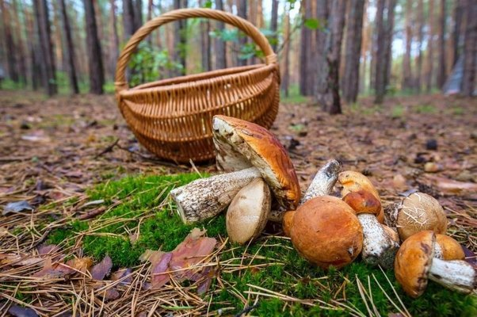

Otoño es una de las épocas donde el bosque adquiere un increible aspecto, todas las hojas cambian de color y caen al suelo formando una autentica alfombra marrón por todo el suelo. Una de las principales actividades que se puede realizar en estos meses es la recogida de setas.

Recogida de Setas
La recogida de setas es una tradicion que ya tiene muchos años. Es una actividad divertida y entretenida y además
con las primeras lluvias del otoño, ya se pueden observar alguna de estas preciadas setas. Os dejamos un link para que podais aprender más sobre este mundo
y que podais diferenciar las setas venenosas de las buenas.